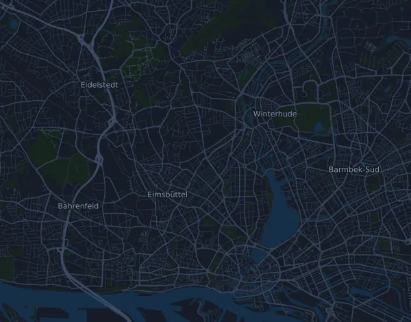

Marathon Hamburg (Marathon) 42,6 km
- Distanse
- 42,6 km
- Høydemeter
- ↑ 142 m
- Høyeste punkt
- 39 moh.
- Underlag
- Vei
- Karakter
- Flat
Høydeprofil
Forbered deg med Mila
Mila er en løpecoach i en app. Legger du et løp inn i planen din, planlegger coachen ukene fram til start etter formen din, og gir deg en tidsprognose og en plan for tempo, drikke og energi i løypa.

Rett økt. Rett dag.
Løypa

Om løypa
Haspa Marathon Hamburg (Marathon) er et gateløp på 42,6 km i Hamburg, Tyskland. Løypa har 142 høydemeter oppover og 141 nedover, 3,3 m per km, og regnes dermed som flat. Høyeste punkt ligger 39 moh. og laveste 2 moh.
Den største stigningen starter ved km 2,0: 26 høydemeter på 2,9 km med 0,9 % i snitt, opp til 39 moh.
I Mila-appen beskriver coachen løypa i detalj på ditt språk og planlegger tempo og energi for den.
Stigninger
| Starter ved | Lengde | Høydemeter | Stigning | Topp (moh.) |
|---|---|---|---|---|
| km 2,0 | 2,9 km | 26 m | 0,9 % | 39 |
Tempotabell
Marathon Hamburg (Marathon) 42,6 km på 3:00:00 – tid per km og mellomtider
4:13 per km · km 10: 42:13 · km 21,1: 1:29:04 · km 30: 2:06:38 · km 40: 2:48:51 · mål: 3:00:00
Marathon Hamburg (Marathon) 42,6 km på 3:30:00 – tid per km og mellomtider
4:55 per km · km 10: 49:15 · km 21,1: 1:43:55 · km 30: 2:27:45 · km 40: 3:17:00 · mål: 3:30:00
Marathon Hamburg (Marathon) 42,6 km på 4:00:00 – tid per km og mellomtider
5:38 per km · km 10: 56:17 · km 21,1: 1:58:46 · km 30: 2:48:51 · km 40: 3:45:08 · mål: 4:00:00
Marathon Hamburg (Marathon) 42,6 km på 4:30:00 – tid per km og mellomtider
6:20 per km · km 10: 1:03:19 · km 21,1: 2:13:36 · km 30: 3:09:58 · km 40: 4:13:17 · mål: 4:30:00
Tidene forutsetter jevnt tempo hele veien. Det er ren regning, ingen prognose: i bakker, i trengsel og ved drikkestasjoner varierer tempoet.
Vanlige spørsmål
Når går Marathon Hamburg (Marathon) 42,6 km?
Marathon Hamburg (Marathon) 42,6 km går søndag 25. april 2027. Sjekk dato og starttid hos arrangøren.
Hvor langt er Marathon Hamburg (Marathon) 42,6 km, og hvor mange høydemeter er det?
Løpet er 42,6 km langt med 142 høydemeter oppover og 141 nedover. Høyeste punkt ligger 39 moh.
Hvordan er løypa i Marathon Hamburg (Marathon) 42,6 km?
Løypa regnes som flat, med 3,3 høydemeter per km i snitt. Den har én stigning på minst 25 høydemeter, ved km 2,0: 26 høydemeter på 2,9 km. Start og mål ligger på samme sted. Underlaget er vei.
Hvordan legger jeg opp farten i Marathon Hamburg (Marathon) 42,6 km?
Sikt på en jevn innsats hele veien, og hold igjen de første kilometerne når beina føles friske og feltet drar fra. Løypa er flat, så et jevnt tempo per kilometer fungerer godt. I Mila får du en tempoplan for akkurat denne løypa etter din egen form.
Flere løp som dette
Flere løp i nærheten
- Harzquerung – Lauf 53 km (Wernigerode–Nordhausen)24. april 2027 · Wernigerode, Tyskland
- 49. Leipzig Marathon 2027 – Marathon 42,2 km18. april 2027 · Leipzig, Tyskland
- Uniper Düsseldorf Marathon 42,2 km18. april 2027 · Düsseldorf, Tyskland
- Deutsche Post Marathon Bonn – Marathon 42,2 km11. april 2027 · Bonn, Tyskland
- BERLINER HALBMARATHON 21 km4. april 2027 · Berlin, Tyskland
- MEIN FREIBURG MARATHON – Marathon 42,2 km4. april 2027 · Freiburg im Breisgau (Messe Freiburg), Tyskland
Forbered deg med Mila
Rett økt. Rett dag.
Opplysningene kommer fra løypefilen og arrangørens informasjon. Sjekk dato, starttider og regler hos arrangøren.
Mila er ikke tilknyttet, sponset av eller godkjent av arrangøren eller løpets sponsorer. Navn og varemerker tilhører sine eiere. Arrangør eller rettighetshaver? Be om endring eller fjerning